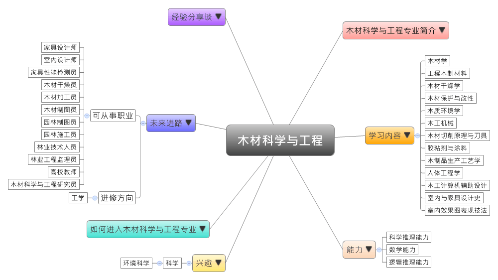
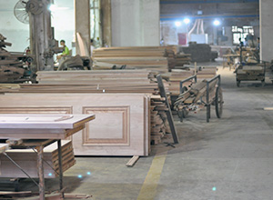

- 专业大观园
-

- 专业介绍
-
什么是木材科学与工程？
木材科学与工程是研究木材原料的微观结构、种类与基本性质，然后通过对各种木材的加工，制成生活中各种木材制品，供人们使用。在职场上，木材科学与工程专业的就业前景还不错，毕业生可到木材工业、家具设计与制造、室内外装饰工程等领域从事木材加工、家具设计与款式开发、木业贸易等工作；在生活中，因应环保、节能、防火防水科技的开发，木造家具、装潢受到人们的欢迎，所以木材在居家装潢中的使用比例逐渐增加、款式与设计也朝多元化发展，对于提升居住质量有很大的效果。
木材科学与工程专业除了培养学生具备木材科学与加工的理论与技术，亦须接受木材物理化学、电工、电子与机械等相关理论与技术的学习，让学生成为能从事木材加工、家具设计、室内外装潢、木业内外销等工作的高级工程技术与销售人才。
进行木制品生产工艺实习  参观木材加工车间
- 学习内容
-
木材科学与工程专业学生主要学习木材科学与工程相关的理论与知识，同时须具备木材物理化学、机械基础、设计艺术等学科的基础，让学生具备从事木材生产、加工、制材、制图、设计、造型等专业工作的基本能力。
本专业学习方向通常分为五面向：木材科学与工程、家具设计与制造、木结构材料与建筑工程、林产与制浆造纸技术、包装工程与应用技术。木材科学与工程专业主干课程有：机械设计基础、高分子概论、木材学、工程木制材料、木材干燥学、木材保护与改性、木质环境学、木工机械、木材切削原理与刀具、胶粘剂与涂料、木制品生产工艺学、人造板生产工艺学、人体工程学、木工计算机辅助设计、模型渲染技术(3D)、室内与家具设计史、室内效果图表现技法、家具设计、室内装饰材料与工程……等。此外，学生须加选一门以上的实验教学课程，如：木工吸尘与气力输送实习、木材干燥实习、木制品生产工艺实习等进行选修。
本专业可以习得的知识与获得之能力、技能列点：第一，掌握木材科学与工程相关的理论与设计、艺术学领域的应用知识；第二，掌握木材的物理与化学性质、熟悉分析方法及应用技术，且具备设计各种家具、进行造型与艺术设计，以及室内设计的基础能力；第三，熟悉我国林业的环境保护政策，并随时更新国内外木材科学与加工技术的最新发展动态。
- 能力
-
木材科学与工程专业学生，需具备以下能力：
相关性向能力 说明 科学推理能力  具有家具造型与设计的能力
具有家具造型与设计的能力
能掌握室内效果图表现的技法
具备木材干燥、生产、加工的能力数学能力 有数学推导的能力
具有木材制图与设计的数学运算能力逻辑推理能力 具备批判与独立思考的能力
能厘清木制材料与环境的适配程度
能够提出木材工程的设计问题并进行验证
- 兴趣
-
若你对下列活动或事物有高度兴趣，可考虑进入木材科学与工程专业学习：
工程 材料 喜欢布置与规画家庭摆设
喜欢修补与改造家中物品
对动手制作木工、家具、机械感兴趣
- 如何进入此专业
-
下面列举开设木材科学与工程专业的211工程重点大学院校：
- 未来进路
-
可从事职业
家具既是生活中的必用品，也是一种艺术创作，随着生活质量与水平的提升，此专业的生活应用需求也应运而生，因而造就木材科学与工程专业人才的需求大增。学生毕业后通常适合于家具公司、室内设计与装饰企业，从事家具设计、管理的工作；同时也可在各类大型木材加工人造板、乐器等工业企业，从事木材加工、制材、制图的工作；又或是在房地产业从事销售与业务工作；最后则是在各高等院校或科研部门从事相关教育、研究工作。在工作职场上皆能发挥制作家具、空间规划与设计等专长：
行业 职业 家具制造业 家具设计师、家具性能检测员 建筑装饰和其他建筑业 室内设计师丶家具装饰员 化工、木材、非金属加工专用设备制造、文教、工美、体育和娱乐用品制造业、木材加工和木、竹、藤、棕、草制品业 木材干燥员丶木材生产员、木材加工员丶木材制图员 林业（服务业） 林业技术人员、花卉技术员、园林施工员、园林制图员、林业工程监理员 教育 高校教师 科学研究 木材科学与工程研究员 国家机构（林业局、森林公安局、森林资源管理司） 公务员 进修方向以下列举木材科学与工程专业毕业生可以继续修读之学科门类、一级学科与硕士点：
学科门类 一级学科 硕士点 工学 林业工程林业工程 木材科学与技术、森林工程、林业工程自动化、林产化学加工工程、林业信息工程、林业装备及自动化、生物质化学与技术、生物质能源与材料、家具与室内设计、森林食品加工与利用、家具工程、木材加工技术与装备 工程（专业硕士）工业设计工程
- 经验分享谈
-
世界竹材加工利用研究领域的开拓者——张齐生
张齐生，浙江省淳安县人，木材加工与人造板工艺学专家。1961年毕业于南京林学院，现为南京林业大学教授、博士生导师、97年当选为中国工程院院士。
完成“铅笔板新工艺研究”对我国铅笔工业中铅笔板生产工艺进行了重大改革，简化了工艺、降低了木材和能源消耗、经济效益显着，82年获天津市优秀成果一等奖，84年获国家发明三等奖；在国内外率先开展竹材工业化利用的研究，先后开发成功车厢底板用竹材胶合板、建筑用竹材胶合模板、竹材碎料板、竹木复合集装箱底板、竹木复合层积材等系列产品。重视研究成果和经济相结合、有效的开展应用研究，使产品在众多领域得到推广应用，推广和示范带动建成一大批竹材加工企业，推动和促进我国竹材加工产业的形成和发展。研究中提出的竹、木复合结构和等强度破坏理论并成功地应用于生产，为竹材科学、高效利用提供了理论依据，使成果具有国际领先水平。已授权中国国家发明专利8项，其中“改进的竹材胶合板制造方法”发明专利95年获中国专利创造金奖，1996年、2006年两度荣获江苏优秀十佳专利发明人。目前正在从事竹炭、竹醋液和农作物秸秆无公害化处理等方面的研究开发工作。
张齐生是我国和世界竹材加工利用研究领域的开拓者，为竹材加工利用事业作出了创造性的贡献。 【资料来源：南京林业大学 材料科学与工程学院 张齐生简介.】